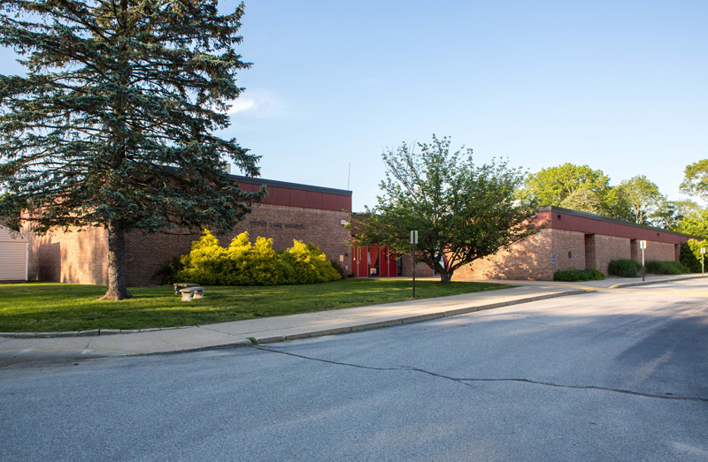

Jordan Barlow - Bio
Bio
Hello, my name is Jordan Barlow. I have played video games essentialy my whole life(couldn't play when I was a toddler). My favorite video game series to play is Fire Emblem. I was born and raised in Rhode Island, although I do not know many places(probably due to video games). I have always wanted to create video games. My dream career is to work at either Riot or Intelligent Systems. I have decided that I would like to start making games so I signed up for New England Institute of Technology. As for side projects I have always wanted to create a Role Playing game and or a Fighting game. I hope that one of my side projects might change someones life for the better. I have already learned a lot from only a few weeks here at NEIT, and hope I can learn more.
Schooling
- Stony Lane Elementary School
- Tri-County Community Action Agency
- New England Institute of Technology
Hobbies
- Playing Video Games
- Watching Anime
- Coding
© 2022, HTML/Javascript Class